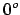
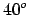
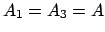
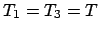
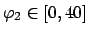

If is between  and , the locomotion has the same characteristics than in the previous case, but the movement is not a straight line: The robot trajectory is an arc. The constraints used in this movement are: , , .




